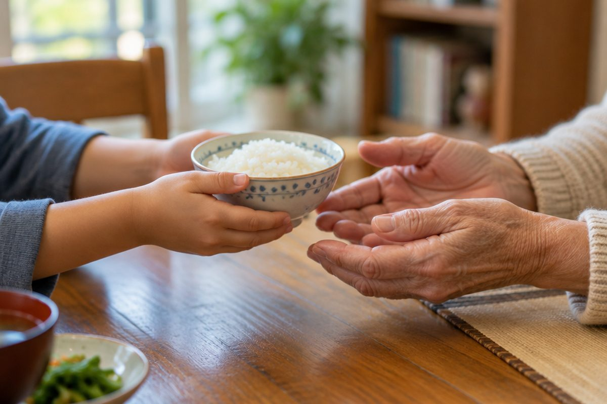

전체 단원 › 1학년 2학기 › 국어 › 3단계 · 인사말과 높임말
어른께는 어떻게 인사하고 말할까?

인사를 하면 마음이 따뜻해져요. 어른께는 높임말을 써요.
때에 맞는 인사말
만나면 '안녕하세요.'라고 해요.
밥 먹기 전에는 '잘 먹겠습니다.'라고 해요.
자기 전: 안녕히 주무세요. / 학교 갈 때: 다녀오겠습니다.
가는 사람, 남는 사람
떠나는 사람에게는 '안녕히 가세요.'라고 해요.
남는 사람에게는 '안녕히 계세요.'라고 해요.
손님이 가실 때: 안녕히 가세요.
고마울 때, 미안할 때
고마우면 '고맙습니다.'라고 해요.
잘못했으면 '죄송합니다.'라고 해요.
고맙습니다. / 죄송합니다.
어른께 쓰는 높임말
어른께는 높이는 낱말을 써요.
밥은 '진지', 집은 '댁'이라고 해요.
'먹다' 대신 '드시다', '자다' 대신 '주무시다'처럼 높이는 말을 쓰고, 말끝에 '-요'나 '-습니다'를 붙여요.
할머니, 진지 드세요.
핵심 낱말
- 인사말
- 만나거나 헤어질 때, 고마울 때 하는 말
- 높임말
- 어른을 높여서 하는 말
- 진지
- '밥'의 높임말
- 댁
- '집'의 높임말
- 연세
- '나이'의 높임말
꼭 알아야 할 표현
| 안녕하세요 | 만났을 때 하는 인사 | |
| 안녕히 주무세요 | 🌙 자기 전에 어른께 하는 인사 | |
| 안녕히 가세요 | 떠나는 사람에게 하는 인사 | |
| 안녕히 계세요 | 남는 사람에게 하는 인사 | [안녕히 게세요] |
| 잘 먹겠습니다 | 🍚 밥 먹기 전 인사 | [잘 먹껟씀니다] |
| 다녀오겠습니다 | 🎒 집을 나설 때 인사 | [다녀오겓씀니다] |
| 다녀왔습니다 | 🏠 집에 돌아왔을 때 인사 | [다녀왇씀니다] |
| 고맙습니다 | 🎁 고마울 때 하는 말 | [고맙씀니다] |
| 죄송합니다 | 🙇 어른께 잘못을 빌 때 하는 말 | [죄송함니다] |
| 진지 드세요 | '밥 먹어요'의 높임말 | |
| 할머니 댁 | '할머니 집'의 높임말 | |
| 연세 | '나이'의 높임말 |
한 줄 정리
- 때와 장소에 맞는 인사말을 해요.
- 떠나는 사람에게는 '안녕히 가세요', 남는 사람에게는 '안녕히 계세요'예요.
- 어른께는 진지, 댁, 연세 같은 높임말과 '-요, -습니다'를 써요.
학교 교육과정 연결
- [2국01-02] 바르고 고운 말로 서로의 감정을 나누며 듣고 말한다.